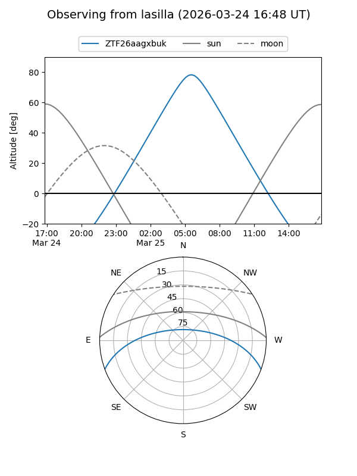
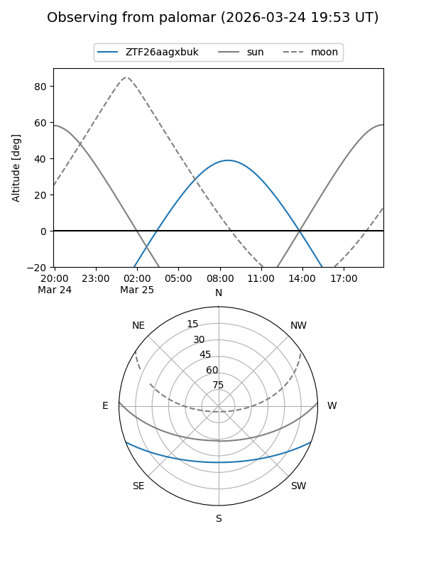

ZTF26aagxbuk
Target ZTF26aagxbuk at 2026-03-25 09:28
Aliases and brokers:
FINK: link
Lasair: link
ALeRCE: link
alt names
ZTF26aagxbuk (ztf,fink_ztf)
Coordinates:
equatorial (ra, dec) = 194.6955,-17.48880
equatorial (HMS+DMS) = 12:58:46.92,-17:29:19.68
galactic (l, b) = (305.4240,+45.34741)
Flags:
Photometry:
last ztfg=14.09
1 ztfg detections
Lightcurve
Visibility


Additional plots